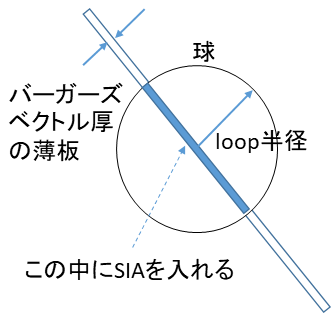
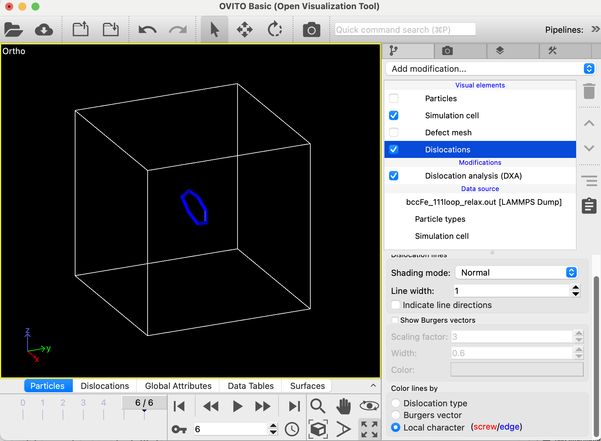

転位ループを挿入する
この講座では転位ループを鉄の結晶に挿入する方法を紹介する。刃状転位の講座で述べたが、刃状転位とは余分な面が半空間に入っている場合にできる格子欠陥である。転位ループはこれと似ていて、こ余分な面が円盤状になっている場合にできる欠陥である。なお、円盤状に面が欠損している場合も転位ループと呼ばれる。以前の講座、照射損傷をモデル化するで学んだ原子の弾き出し過程から生成された格子間原子が面状に集まるのが、転位ループの典型的なでき方である。よってこの講座は核融合、原子力、加速器の材料を学ぶ受講者に適している。
まずはスクリプトのおおまかな過程を述べる。下の図を見よう。ボックスの中心に転位ループをつくることを考える。まず転位ループが赤道になるような球を挿入する。よって、転位ループの半径と中心はその球のものと同じになる。次に球内に転位ループのバーガーズベクトル厚の薄板を定義する。図の青く塗りつぶされた部分がその薄板である。最後にその部分にある原子をすべて複製して原子の数を倍にする。その後、構造緩和すれば転位ループが挿入される。

bccFe_111loop_relax.lcmはバーガーズベクトルが(1/2)<111>のループをBCC鉄結晶に挿入するコマンドスクリプトの例である。実行は以下のコマンドで行う。
$work> lmp_serial -in script/bccFe_111loop_relax.lcm
刃状転位の場合と同様にdumpしたファイル（bccFe_111loop_relax.out）をOVITO/DXAで解析すれば計算がうまくいったか確認することができる。この場合は円環状の転位が確認できるはず。DXAのパネルの下の方でバーガーズベクトルが(1/2)<111>であることが確認できるだろう。また前のらせん転位を挿入する講座で習ったように、"Dislocations"をハイライトさせて刃状転位であること確認しよう。LAMMPSおよびOVITOの処理が適切であれば下の図のようになる。＊＊＊

それではスクリプトを見ていこう。
variable x_box equal 48
variable y_box equal 48
variable z_box equal 48
variable radius equal 5
variable lc equal 2.862
まずは必要な変数をまとめて定義しておく。ボックスの(x,y,z)方向のサイズ、ループの半径、格子定数である。
units metal
boundary p p p
atom_style atomic
lattice bcc ${lc} orient x 1 0 0 orient y 0 1 0 orient z 0 0 1
region box block 0 ${x_box} 0 ${y_box} 0 ${z_box} units box
create_box 1 box
create_atoms 1 box
この部分は何度も出てきたので説明は省く。
pair_style eam/fs
pair_coeff * * ./potentials/Fe_Ackland04_ZBL.eam.fs Fe
neigh_modify every 1 delay 0 check yes
この部分も何度も出てきたので説明は不要と思う。
variable loop_x_center equal ${x_box}/2
variable loop_y_center equal ${y_box}/2
variable loop_z_center equal ${z_box}/2
region sphere1 sphere ${loop_x_center} ${loop_y_center} ${loop_z_center} ${radius} units box
group sphere1 region sphere1
最初の３行ではループの中心の位置（この場合はボックスの中心）を定義する。
次に"region ... sphere"コマンドを使って、ループの中心位置にループの半径と同じ半径を有する球状の領域を定義する。球を作る理由は上で説明した。
また、groupコマンドを使ってその球状の領域に含まれる全原子をグループ化する。
次に行く。
variable burgers_x equal 1.
variable burgers_y equal 1.
variable burgers_z equal 1.
variable b_norm equal (${lc}/2)*sqrt(3./(${burgers_x}*${burgers_x}+${burgers_y}*${burgers_y}+${burgers_z}*${burgers_z}))
variable x_norm equal ${burgers_x}*${b_norm}
variable y_norm equal ${burgers_y}*${b_norm}
variable z_norm equal ${burgers_z}*${b_norm}
このブロックではバーガーズ・ベクトル(1/2)[111]を定義する。
まず最初の3行では方向のみを定義している。
次の行では、バーガーズ・ベクトルの長さ調整するための係数を計算している。
最後の3行で長さが調整されたバーガーズ・ベクトルの3成分を求めている。
variable tuning_factor equal 0.5
variable loop_x_high equal ${loop_x_center}+${x_norm}/2-${tuning_factor}
variable loop_y_high equal ${loop_y_center}+${y_norm}/2-${tuning_factor}
variable loop_z_high equal ${loop_z_center}+${z_norm}/2-${tuning_factor}
region plane1 plane ${loop_x_high} ${loop_y_high} ${loop_z_high} ${x_norm} ${y_norm} ${z_norm} side out units box
さてここではバーガーズ・ベクトルの厚さの円盤を定義しその部分に原子を挿入する必要があるが、いきなり円盤の領域を定義することはむずかしいので、まずは円盤の上面より下の半空間を定義する。
ここで使われている"tuninig_factor"は経験的に決定したパラメータであり、後で面を定義する時にその位置が原子の位置と重ならないようにするためのものである。もし重なっているとその面を境界としてグループを作る時に不安定な結果になってしまう。
次の3行では円盤上面の定義から、その下の半空間を定義している。
variable loop_x_low equal ${loop_x_center}-${x_norm}/2-${tuning_factor}
variable loop_y_low equal ${loop_y_center}-${y_norm}/2-${tuning_factor}
variable loop_z_low equal ${loop_z_center}-${z_norm}/2-${tuning_factor}
region plane2 plane ${loop_x_low} ${loop_y_low} ${loop_z_low} ${x_norm} ${y_norm} ${z_norm} side in units box
このブロックは基本的に前のブロックと手続きで、今度は円盤の下面を定義することによりそれより上の半空間を定義した。
region cylinder1 intersect 3 sphere1 plane1 plane2
group cylinder1 region cylinder1
ここでは、ここまでに定義された球と2つの半空間の共通部分を新たな領域として定義する。これが求めたかった"円盤"、すなわち原子を挿入して「余分な面」となる部分である。
そして、その領域に属する原子をグループにする。
variable shift_x equal ${x_norm}/3.
variable shift_y equal ${y_norm}/3.
variable shift_z equal ${z_norm}/3.
displace_atoms cylinder1 move ${shift_x} ${shift_y} ${shift_z}
原子を挿入する前に、"円盤"に含まれる原子グループに属する全ての原子をバーガーズベクトル方向にb/3だけ移動させる。これはこの後挿入する原子と元からある原子が重ならないようにするための処理である。
create_atoms 1 region cylinder1
この領域のすべての格子位置に原子を入れる。これでこの領域では結晶面が1面余分に入ったことになる。
variable dump_interval equal 200
fix 1 all box/relax iso 0.0 vmax 0.001
thermo ${dump_interval}
thermo_style custom step pe lx ly lz press pxx pyy pzz etotal
dump 1 all custom ${dump_interval} bccFe_111loop_relax.out id type xs ys zs
min_style cg
minimize 1e-12 1e-6 50000 10000
最後は構造緩和を行う。構造緩和によって新たに入れた結晶面と元からあった結晶面が自然な位置関係になる。これで計算は終了し、ブロックの真ん中に転位ループができる。
今回はかなり複雑なテクニックを使ったので難しかったかもしれない。特に新しいregionコマンドの使用法が出てきたがそれについて細かい説明はしなかった。もう受講者は自分でLAMMPSのマニュアルで確認できるだろう。
ここで紹介した方法より楽に転位ループを入れる方法があるかもしれないが、1つうまく行く方法を知っていれば、あとはブラックボックスとして使っても良い。重要なことは照射によって生成される転位ループをMDでモデリングできるということである。これが使えれば、転位ループの移動、転位ループと他の格子欠陥との相互作用など様々な応用の可能性が広がることになる。
----------------------------------------------------
目次へ 前はらせん転位を挿入する 次は並列計算を行う